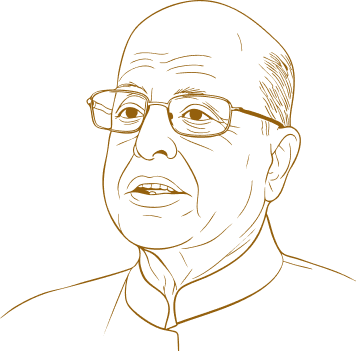
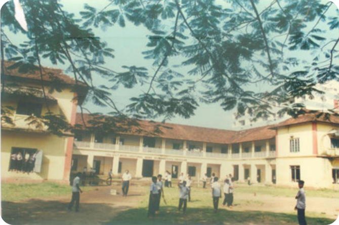
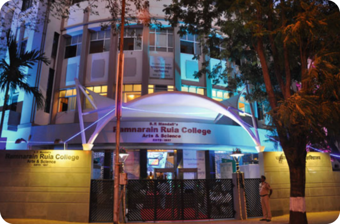
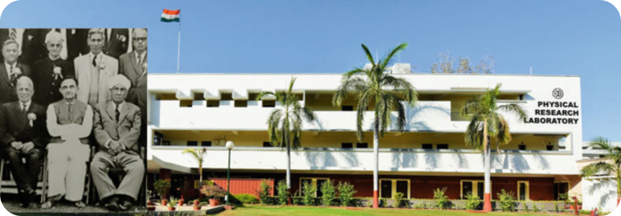
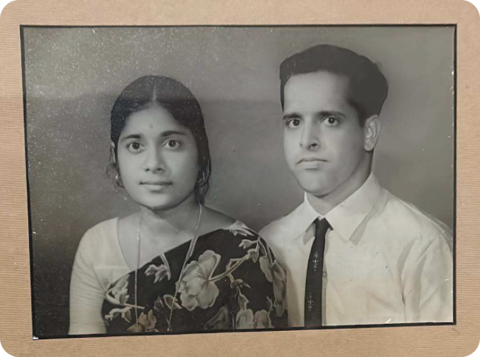
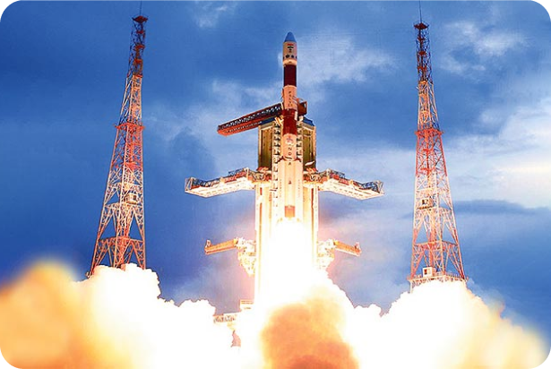

In his book Space and Beyond, Dr K. Kasturirangan reflects on his life as “extraordinary and many-splendored.” This timeline traces the remarkable journey behind those words.






Dr K. Kasturirangan is born on October 24, 1940, in Ernakulam, Kerala, to C.M. Krishnaswamy Iyer and Visalakshi. He attends Sree Rama Varma High School, Ernakulam, and later South Indian Education Society High School, in Bombay.
Completes BSc (Honours) in Physics at Ramnarain Ruia College, Mumbai
Completes MSc in Physics from Bombay University
Joins Physical Research Laboratory (PRL) for his doctoral work in cosmic
X-rays in Vikram Sarabhai’s laboratory
Marries Lakshmi. They have two sons, Rajesh and Sanjay
Completes doctorate in experimental high-energy astronomy.
Takes on systems engineering responsibility for Aryabhata, India’s
first satellite
Aryabhata is successfully launched by a Soviet Kosmos-3M rocket from Kapustin Yar
Appointed Project Director for Bhaskara-I, India’s first experimental earth observation satellite
Bhaskara-I launches
Appointed Project Director for Bhaskara-II
The Aryabhata Project, a book he co-edited with U.R. Rao releases
Bhaskara-II launches from Kapustin Yar aboard the Soviet’s
Intercosmos launch vehicle
Awarded the Intercosmos Council Award of the Soviet Academy of Sciences
Receives his first Padma award, the Padma Shri, in the Science and Engineering category
Awarded the Shanti Swarup Bhatnagar Award in Engineering Sciences
Appointed Deputy Director of ISRO Satellite Centre
Appointed Associate Director of ISRO Satellite Centre
Appointed Director of ISRO Satellite Centre, overseeing development of IRS-1B, INSAT-2, and other programmes
IRS-1B, the second of the series of indigenously developed remote sensing
satellites of India, successfully launches from the Soviet Cosmodrome at
Baikonur
His wife Lakshmi passes away
Receives his second Padma award, the Padma Bhushan, in the Science and
Engineering category
INSAT-2A and 2B, India’s first multipurpose satellites (for providing
telecommunications, television broadcasting, meteorological and search and
rescue services) launches from French Guiana using the European Ariane 4
launch vehicle
The first flight of the indigenously developed launch vehicle PSLV narrowly misses success due to a software error
Appointed Chairman of the Space Commission, a position he held for nearly
a decade under four successive Prime Ministers
The PSLV has its first successful launch
India’s first second-generation operational remote sensing satellite, IRS-1C, is launched by a Molniya-M launch vehicle from the Baikonur Cosmodrome
Proposes an Indian lunar mission during a public lecture in New Delhi
Receives his third Padma award, the Padma Vibhushan, in the Science and Engineering category
A new class of launch vehicle capable of launching heavy communication
and navigation satellites, the GSLV, achieves its first successful test
flight, making India one of the six countries in the world to demonstrate
capabilities for geostationary satellite launches
Elected President of the Indian Academy of Sciences
MetSat-1, India’s first dedicated meteorological satellite, launches
on the indigenous PSLV in Sriharikota
Conferred the title of Officer of the Legion d’honneur, the highest
and most prestigious French national order of merit
MetSat-1 is renamed Kalpana-1, in honour of astronaut Kalpana Chawla who was killed when Space Shuttle Columbia disintegrates on reentry
Becomes Director of the National Institute of Advanced Studies (NIAS) in Bengaluru
Elected President of the Indian National Academy of Engineering
Delivers a 29-minute speech in the Rajya Sabha in support of the Indo-US nuclear 123 Agreement
Chandrayaan-1, the Moon mission he championed for years, is successfully
launched
Becomes the first chairman of the Karnataka Knowledge Commission (KKC),
established by the government of Karnataka
Chairs the High Level Working Group on the Western Ghats constituted by
the Ministry of Environment and Forests to suggest an approach for
development of the ecologically sensitive Western Ghats
Appointed Chancellor of Jawaharlal Nehru University, New Delhi
Delivers the convocation address at IISc, Bengaluru, at its first ever
convocation ceremony
Awarded the Rajyotsava Prashasti by the Government of Karnataka
The Hesaraghatta campus of the International Centre for Theoretical Sciences (ICTS), an institute Dr Kasturirangan was closely involved in, is inaugurated
Chairs a committee constituted by the government of India to develop the National Education Policy (NEP)
His book Space and Beyond is published by Springer Nature
The National Curriculum Framework for School Education, formulated by a steering committee under his stewardship, releases
Passes away at the age of 84 at his residence in Bengaluru
Receives an offer to do postdoctoral work with Nobel Laureate Prof Louis Alvarez at UC Berkeley, but is convinced by Sarabhai to join ISRO instead
IRS-1A, India’s first operational remote sensing satellite, developed under his leadership, successfully launches from the Soviet Cosmodrome at Baikonur, aboard their Vostok-2M rocket
Takes charge as Chairman of ISRO and Secretary of the Department of Space
Following a midnight phone call nominating him to the Rajya Sabha, he steps down as Chairman of ISRO
Joins the Planning Commission under PM Manmohan Singh, with charge of Science and Technology, Environment, Forests, Agriculture Research, and Climate Change
Release of the comprehensive report on the Western Ghats by High-Level Working Group which he chaired
Astrosat, India’s first dedicated multi-wavelength space observatory and a mission he championed, is successfully launched
The Draft National Education Policy 2020 is officially released